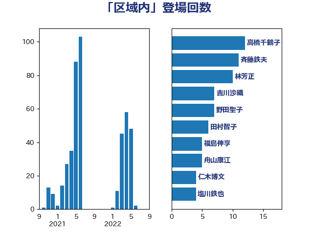

単語「区域内」

| 高橋千鶴子 | 日本共産党 | 12 回 |
| 斉藤鉄夫 | 公明党 | 11 回 |
| 林芳正 | 自由民主党 | 10 回 |
| 吉川沙織 | 立憲民主党 | 7 回 |
| 野田聖子 | 自由民主党 | 7 回 |
| 田村智子 | 日本共産党 | 6 回 |
| 福島伸享 | 無所属 | 5 回 |
| 舟山康江 | 国民民主党 | 5 回 |
| 仁木博文 | 無所属 | 4 回 |
| 塩川鉄也 | 日本共産党 | 4 回 |
| 小宮山泰子 | 立憲民主党 | 4 回 |
| 山添拓 | 日本共産党 | 4 回 |
| 森屋宏 | 自由民主党 | 4 回 |
| 玉木雄一郎 | 国民民主党 | 4 回 |
| 野上浩太郎 | 自由民主党 | 4 回 |
| 音喜多駿 | 日本維新の会 | 4 回 |
| 高木かおり | 日本維新の会 | 4 回 |
| 斎藤洋明 | 自由民主党 | 3 回 |
| 本田太郎 | 自由民主党 | 3 回 |
| 浜野喜史 | 国民民主党 | 3 回 |
| 熊谷裕人 | 立憲民主党 | 3 回 |
| 田村貴昭 | 日本共産党 | 3 回 |
| 石田真敏 | 自由民主党 | 3 回 |
| 赤嶺政賢 | 日本共産党 | 3 回 |
| 足立敏之 | 自由民主党 | 3 回 |
| 伊藤渉 | 公明党 | 2 回 |
| 務台俊介 | 自由民主党 | 2 回 |
| 大口善徳 | 公明党 | 2 回 |
| 宮下一郎 | 自由民主党 | 2 回 |
| 宮崎政久 | 自由民主党 | 2 回 |
| 小泉進次郎 | 自由民主党 | 2 回 |
| 山崎誠 | 立憲民主党 | 2 回 |
| 岩渕友 | 日本共産党 | 2 回 |
| 岸田文雄 | 自由民主党 | 2 回 |
| 平沢勝栄 | 自由民主党 | 2 回 |
| 後藤祐一 | 立憲民主党 | 2 回 |
| 木原誠二 | 自由民主党 | 2 回 |
| 杉久武 | 公明党 | 2 回 |
| 渡辺猛之 | 自由民主党 | 2 回 |
| 片山大介 | 日本維新の会 | 2 回 |
| 石川博崇 | 公明党 | 2 回 |
| 竹内真二 | 公明党 | 2 回 |
| 笹川博義 | 自由民主党 | 2 回 |
| 紙智子 | 日本共産党 | 2 回 |
| 菅義偉 | 自由民主党 | 2 回 |
| 赤羽一嘉 | 公明党 | 2 回 |
| 青木愛 | 立憲民主党 | 2 回 |
| 三浦信祐 | 公明党 | 1 回 |
| 三谷英弘 | 自由民主党 | 1 回 |
| 中西祐介 | 自由民主党 | 1 回 |
| 井上哲士 | 日本共産党 | 1 回 |
| 伊波洋一 | 無所属 | 1 回 |
| 伊藤孝江 | 公明党 | 1 回 |
| 倉林明子 | 日本共産党 | 1 回 |
| 坂本哲志 | 自由民主党 | 1 回 |
| 城井崇 | 立憲民主党 | 1 回 |
| 城内実 | 自由民主党 | 1 回 |
| 塩村あやか | 立憲民主党 | 1 回 |
| 宗清皇一 | 自由民主党 | 1 回 |
| 室井邦彦 | 日本維新の会 | 1 回 |
| 小西洋之 | 立憲民主党 | 1 回 |
| 山下芳生 | 日本共産党 | 1 回 |
| 山口壯 | 自由民主党 | 1 回 |
| 山口那津男 | 公明党 | 1 回 |
| 山本博司 | 公明党 | 1 回 |
| 山際大志郎 | 自由民主党 | 1 回 |
| 岡本三成 | 公明党 | 1 回 |
| 岸信夫 | 自由民主党 | 1 回 |
| 市村浩一郎 | 日本維新の会 | 1 回 |
| 平口洋 | 自由民主党 | 1 回 |
| 杉田水脈 | 自由民主党 | 1 回 |
| 柴田巧 | 日本維新の会 | 1 回 |
| 森まさこ | 自由民主党 | 1 回 |
| 横沢高徳 | 立憲民主党 | 1 回 |
| 武田良太 | 自由民主党 | 1 回 |
| 河野義博 | 公明党 | 1 回 |
| 泉田裕彦 | 自由民主党 | 1 回 |
| 清水貴之 | 日本維新の会 | 1 回 |
| 穀田恵二 | 日本共産党 | 1 回 |
| 細田健一 | 自由民主党 | 1 回 |
| 緒方林太郎 | 無所属 | 1 回 |
| 菅家一郎 | 自由民主党 | 1 回 |
| 菊田真紀子 | 立憲民主党 | 1 回 |
| 藤木眞也 | 自由民主党 | 1 回 |
| 西岡秀子 | 国民民主党 | 1 回 |
| 西村康稔 | 自由民主党 | 1 回 |
| 赤池誠章 | 自由民主党 | 1 回 |
| 金子恭之 | 自由民主党 | 1 回 |
| 長友慎治 | 国民民主党 | 1 回 |
| 高野光二郎 | 自由民主党 | 1 回 |